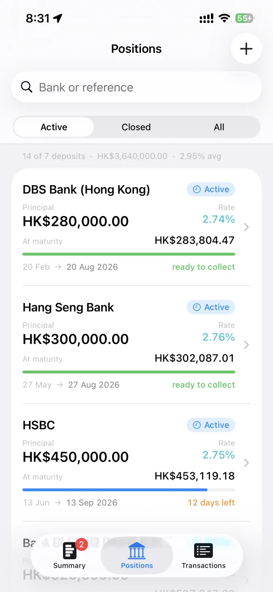
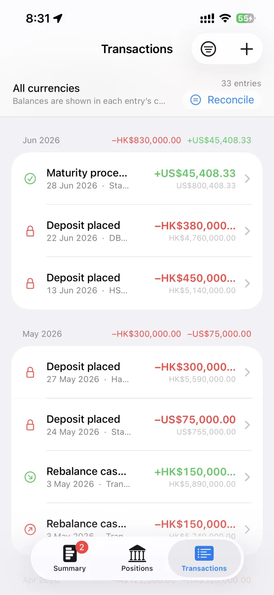
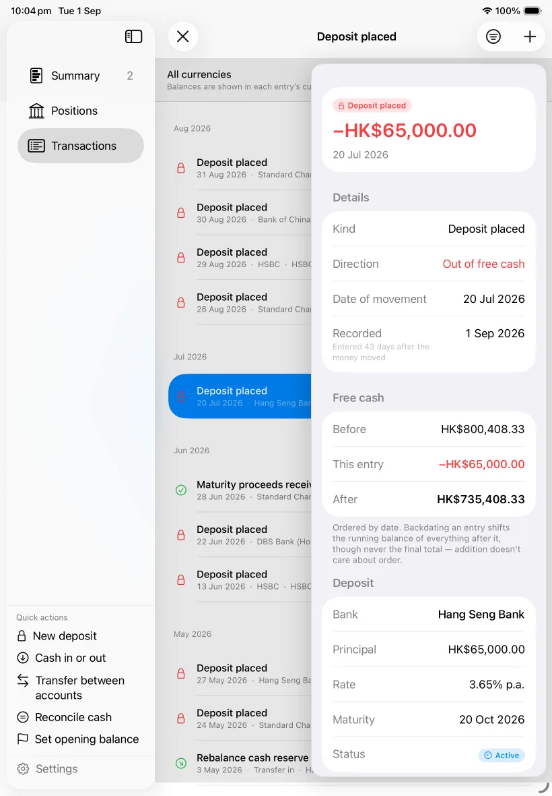
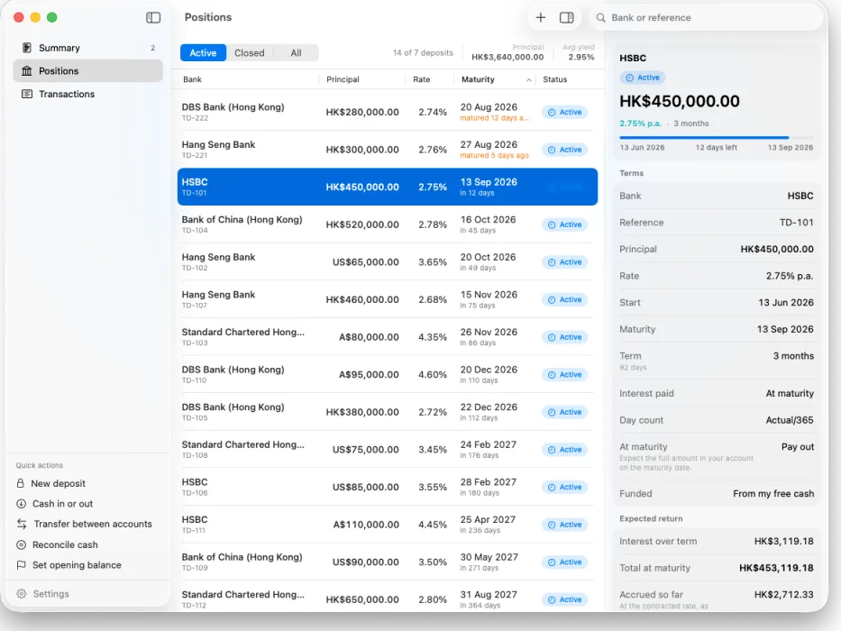

Know what's maturing, and what's sitting idle.
Maturity tracks your term deposits across every bank you use: what each one earns, when it matures, and your tracked position and available cash. Designed to track term deposits accurately, with the interest maths done properly.
Available on iPhone, iPad and Mac. No Maturity account to create.
One portfolio, shaped for each device
Keep the quick scan on iPhone, use a focused workspace on iPad, and open the full table-and-inspector view on Mac. The same records stay in sync through your iCloud.
Clear when you're on the move
Focused cards, fast filters and the full ledger without desktop clutter.



A roomy portfolio workspace
A persistent sidebar, readable tables and focused overlay inspectors.



Dense where density helps
Resizable tables and native inspectors make larger portfolios easy to audit.



Three screens, no clutter
Everything is one tap from where you land. No dashboards to configure and no onboarding to sit through.
Summary
Summary starts with Tracked position. It is exactly recorded free cash — shown as Available cash — plus the principal of open deposits. It excludes accrued interest and every projected or future interest amount. Exact native-currency figures remain authoritative, and different currencies are never directly summed.
Next come available cash, liquidity through the exact inclusive Today, 1 week, 1 month and 3 months windows, the next maturity, and a twelve-month ladder grouped by month or quarter. Empty periods are shown too, because a gap is the useful part.
Positions
Every deposit, active and closed, sortable by bank, rate, term or maturity date. On the Mac it's a proper resizable table with click-to-sort headers.
Transactions
A complete ledger with a running balance on every row. Your available cash is this list added up, so if a figure ever looks wrong you can scroll until the balance stops matching. Deposits you already held when you started are recorded without a cash movement, so nothing gets subtracted twice.
Roll-overs, handled
Some term deposits roll automatically if you give no instructions before maturity. Maturity treats that as a first-class event, not an edge case, and lets you roll part of the proceeds while keeping the rest as cash.
Breaking early, honestly
Records a product's required notice period, estimates the reduced interest, then lets you replace it with the figure your bank actually quotes. Logged as its own transaction type so your history stays clear about what ran full term.
Where your cash actually is
Open Available cash for an account-and-bank breakdown. In Where your cash is, accounts are grouped under collapsible bank headers: one or two banks start open, while longer bank lists start closed. A header shows its account count and a native-currency subtotal when that is safe; a mixed-currency bank shows currency codes instead of adding unlike amounts.
Transfers record what left and what arrived as separate figures, which keeps each account true to its statement. Accounts can be reordered within their bank, so a long list stays navigable.
More than one currency
Track deposits in several currencies at once. Exact native-currency figures are always authoritative, and currencies are never directly summed. On Summary, tracked-position currency rows collapse when there are more than three; use Show all and Show less to expand or collapse them.
Each currency drills down to its own full summary. Cross-currency comparison uses figures that carry no currency: weighted average rate, idle cash and average term remaining. It also says plainly that a higher rate elsewhere is not necessarily a better return once exchange-rate movement is counted.
If you enable Show an indicative equivalent, Summary may add one secondary ≈ equivalent of the complete tracked position. It appears only when every populated currency can be converted, and is dated and identified with its rate source. If any required rate is unavailable, no partial numeric equivalent is shown. Available cash and principal do not get separate converted totals.
Reconcile as a diff
Type what your bank shows. The app works out the difference and its direction, then records the adjustment as a dated correction. Nothing to calculate in your head, and no way to get the sign backwards.
Maturity reminders
Opt in to device-local alerts at 9:00 AM seven days before an active deposit matures and again on maturity day. Notifications identify the bank and date but keep the amount private. Each device controls its own reminder setting.
Your language
Use your system language or choose English, German, Spanish, French, Italian, Japanese, Korean, Portuguese, Simplified Chinese, Traditional Chinese or Hong Kong Traditional Chinese in the app. The interface changes immediately on that device.
The interest maths, stated plainly
Products use different day-count bases. Maturity uses actual/365 by default, while actual/360 and 30/360 are supported per deposit. Every figure the app calculates is a starting point you can overwrite with whatever your bank quotes.
| Example | Basis | Interest |
|---|---|---|
| $100,000 at 4.85% p.a. for 365 days | Actual/365 | $4,850.00 |
| $100,000 at 4.85% p.a. for 90 days | Actual/365 | $1,195.89 |
| The same 90 days on a 360-day year | Actual/360 | $1,212.50 |
That last row is why the basis matters: in this example, using a 360-day year produces a return about 1.4% higher than using a 365-day year. Choose actual/365, actual/360 or 30/360 per deposit to match the product's quoted convention.
Money is stored as whole cents and rates as whole basis points, never as floating-point numbers. Your balance is the exact sum of your transactions, not an approximation that drifts by a cent every few hundred entries.
Your figures stay yours
Maturity has no server. There is no account to create, nothing to log in to, and no analytics.
Stored on your devices
Your data lives on your iPhone, iPad and Mac, and syncs through your own private iCloud container using CloudKit. It never passes through any infrastructure belonging to the developer.
No bank connections
Maturity never asks for banking credentials and never connects to a financial institution. You enter every financial record yourself; only optional public reference-rate data is fetched when you enable indicative conversion.
Nothing collected
No analytics SDKs, no advertising identifiers, no crash-reporting third parties, no tracking of any kind.
Not financial advice
Maturity is a record-keeping and calculation tool. It does not provide financial, investment or taxation advice, and it does not recommend products or institutions. Figures it calculates are estimates based on what you enter — your bank's own statements and quotes are always the authority. Confirm anything that matters with your institution or a licensed adviser.